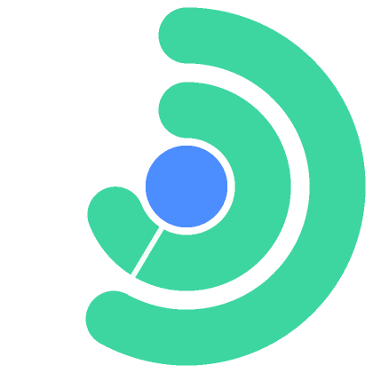

Outer ring
5-hour session
Inner ring
weekly limit
White tick
end of the time that's left
Brighter track
time left in the window
Coloured arc
quota left · green → amber → red
Centre dot
the account's own colour